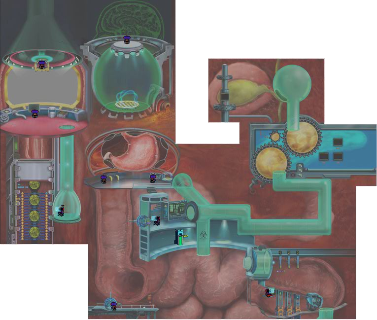
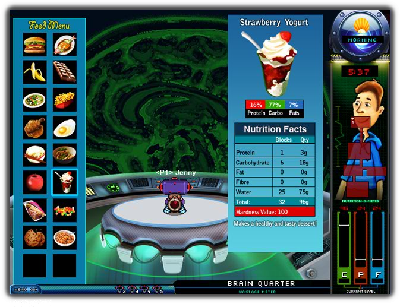
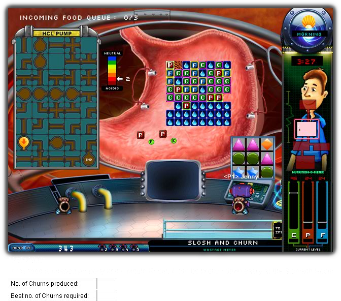
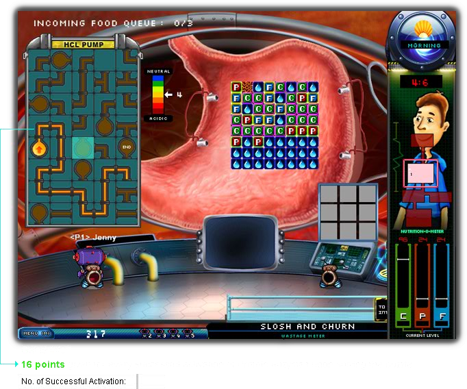

A Singapore primary-school memory
We had a whole digestive system to run.
At primary school, a trip to the computer lab could rescue an otherwise ordinary day. Then Gut Feel put my friends and me in charge of a man's digestion.

Computer lab
Air-con, plastic chairs, and a medical emergency
I remember the walk to the computer lab almost as well as the games. You crossed the corridor in the heat and arrived in a room with air conditioning, a computer in front of you, and a chance that the lesson might involve playing something. That was a very good deal for a primary school kid in Singapore.
The cold air hit a shirt that had been perfectly comfortable outside. Chairs scraped as everyone sat down. We all made an enormous effort to behave normally while there was a computer directly in front of us.
People leaned over to see what was on the next screen. While someone explained the instructions, we were already looking for the buttons. Gut Feel gave all that impatience somewhere to go: my friends and I had a man's digestive system to look after.


Inside George
The game with the wonderfully strange job
George Killiney needed help operating his Gut Replacement Module. We each controlled a little robot inside it, which meant several primary school children were now responsible for what happened to his lunch. George deserved better, but we were having a great time.
There was chewing to do. Food needed help through the oesophagus. In the stomach, you solved a pipe puzzle to get the acid working. Farther along, enzymes had jobs to do, and nutrients needed to reach the correct places. All of this happened while your friends were busy somewhere else inside the same man.
The menu included rice, noodles, and chicken curry, all familiar enough until you had to do the digestion yourself. A burger could give several people quite a lot of work.
The problem with having friends for organs
Gut Feel made cooperation unavoidable. Food kept moving, or it was supposed to. If something got stuck, the rest of the system had to live with the consequences.
We learned how digestion worked while accusing one another of poor stomach management.
You could be very pleased with your own performance and still discover that the team was in trouble. Perhaps the next station needed help. Perhaps everyone had become interested in the same room. A digestive system has limited patience for this sort of thing.
I loved that the game gave us a reason to care about someone else's screen. Leaning over was useful. Getting a friend's attention was part of playing. There was always the possibility that the person beside you had misunderstood something important, although obviously you would consider every other explanation first.
The science was easier to remember when a mistake had consequences for the team. Food needed different treatment at each stage, and whatever we failed to do became a problem for the next person. We understood more of it as we played, usually after getting something wrong.
I don't remember individual rounds very clearly now. I remember playing with friends and wishing we could keep going when the lesson ended.
The files
I still had the installer. How difficult could this be?
I had kept the old installation files. Finding them made me think this would be straightforward: get it running, ask some friends to join, and find out whether we'd become any more competent at digestion.
Gut Feel was built in Adobe Director, with Windows components that modern browsers couldn't use. Multiplayer needed its old server setup too. Having the files was useful, but it left me with a lot of missing software to account for.
Each time I got another screen to work, I found something else the game expected. It would ask for a Windows function or try to contact an old network service. I had to understand what that request did before I could make it work in the browser.
By then I was too interested to put the files away. I had already spent longer getting ready to play than I'd ever intended to spend playing.
Astra helped me get it open
Astra made the recovery possible. With its help, I could work through the Director movies, inspect the recovered scripts, and understand what the old multiplayer system expected.
The artwork, music, and game instructions were still in those files. Recovering them meant I could use the things I remembered, along with plenty of details I'd forgotten. I was probably more excited about an educational game about chewing than anyone should be.
The browser edition loads the recovered Director movies and runs their code. I added the parts needed to replace the old Windows functions and server connections.
I wanted to recognise what I was playing. The odd little details mattered, including the ones I would never have remembered well enough to reproduce myself. A picture or sound would turn up and show me that I had kept considerably more of the game in my head than I knew.

Back together
I needed the other players back
It felt good to have Gut Feel running on one screen. I still needed multiplayer, though, because I wanted to play it with my friends.
The original game had its own message format and expected specific replies from the server and other players. We could inspect those messages and build the browser connections around them, so everyone could join the same session and play together.
Now I can create a lobby and send a friend the link. They join in their browser, and we're back to sharing responsibility for whatever happens inside George.
The long way back
The game is ready to open.
I can send a friend the link, wait for them to join, and have another go at keeping George fed. I cannot recreate the walk to the computer lab. I am also responsible for my own air-con bill now.